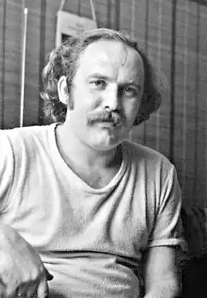
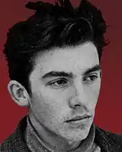

Народився 23 січня 1949 року у селі Березини Козинського району Рівненської області у селянській сім'ї. Навчався у Московському літературному інституті. Писати почав у ранньому віці.
Йому не вдається вступити до Київського університету через виступ перед пам'ятником Шевченку, де він намагався трактувати твори Кобзаря не так як офіційна пропаганда. Після цього повернувся додому й працював на радіо у Радивилові.
Після написання антирадянської та антиімперської за сутністю поеми "Вертеп" приїжджає до Львова, де з великим успіхом її читає у середовищі молоді. Там же знайомиться з подружжям Калинців — Ігорем та Іриною, братами Горинями, В. Чорноволом, В. Морозовим. Друзі та близькі називають поета Грицьком, як він сам волів. Після зближення із "антирадянськими елементами" у Г. Чубая починаються обшуки та переслідування, інспіровані КДБ. Вважаєтся, що така постійна нервова напруга підірвала здоров'я поета. У 1970 році одружується та залишається жити у Львові на Погулянці. Організовує та видає "Скриню" — один із перших самвидавівських журналів України, де друкуються твори Г. Чубая та його друзів. 16 травня 1982 р. Григорій Чубай помер. Поховано його було на Сихівському цвинтарі. За клопотаннями родини та Львівської організації Спілки письменників України Львівська міська рада дозволила у грудні 1995 р. перезахоронити останки поета на полі № 11 Личаківського цвинтаря. 15 вересня 2007 р. на могилі поета встановлено пам'ятник (цього ж дня у Львові відбувся "Вечір пам'яті Грицька Чубая"). Тільки посмертно його прийняли до Спілки письменників України. І тільки тоді радянська влада дозволила друкувати його вірші та поеми, переклади з Блока, іспанських, чеських та польських поетів. У 1990 році вийшла його книжка "Говорити, мовчати та говорити знов", перекладена польською та іспанською, а у 1999 — "Плач Єремії".